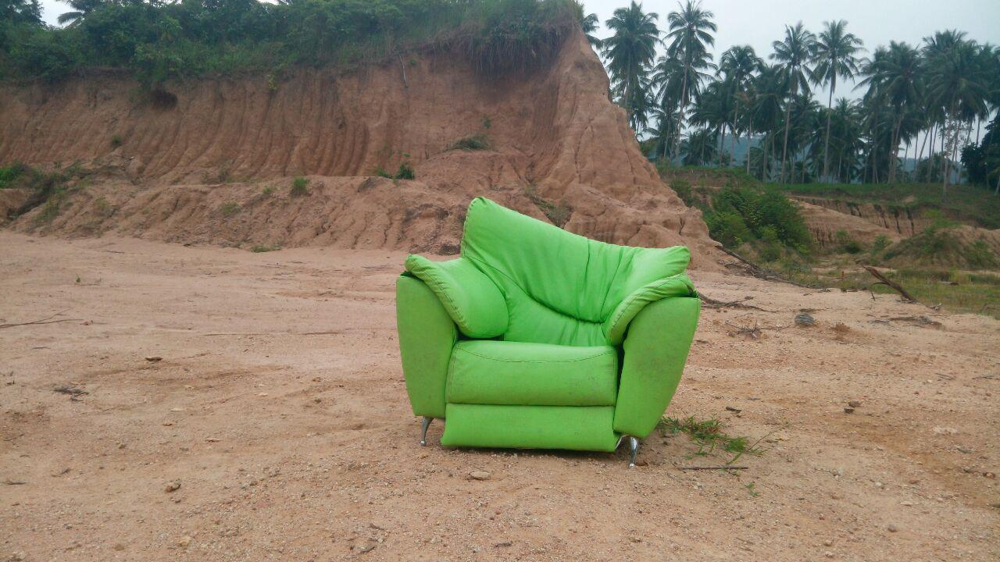

МОИ ИСТОРИИБлог.
Блог.
Всё, что не
уместилось.
Здесь я постепенно соберу всю свою историю. Как работал водителем, уехал в Таиланд, занимался бизнесом, в 2022 году собирался переехать в Америку и несколько раз начинал всё заново.
А ещё буду писать о поездках, людях, интересных местах и просто о том, что происходит в моей жизни.

Первый раз в Таиланде:
из Иванова на Самуи
Десять лет за рулём, билет в одну сторону и девять часов страха над облаками. Вспоминаю, как началась моя тайская глава.
Читать историю →
Первые дни на Самуи:
монах, джунгли и свои люди
Пошёл искать монаха, познакомился с Олесей, остался голодным в тайском буфете и случайно приехал в гости к продавцам своего байка.
Читать историю →